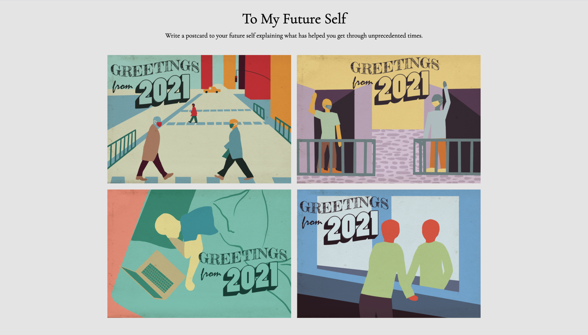
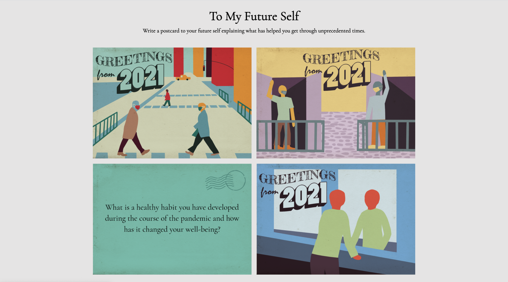
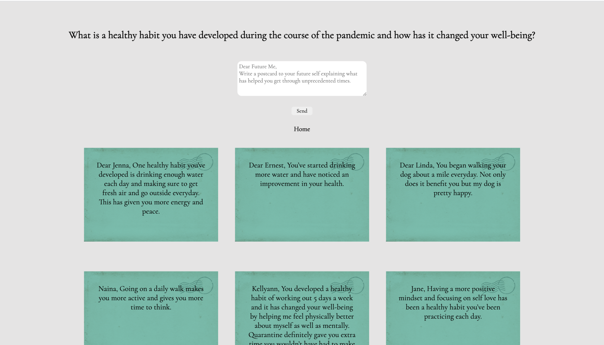

← Back
To My Future Self
"To My Future Self" is an interactive platform where users can compose postcards addressed to their future selves, sharing valuable advice and strategies on enhancing their mental well-being amidst the pandemic.


